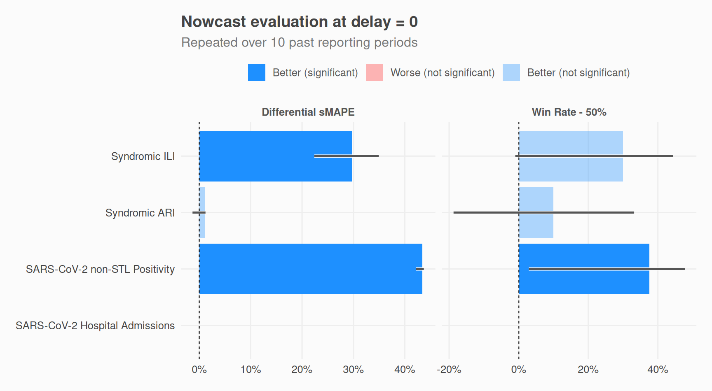
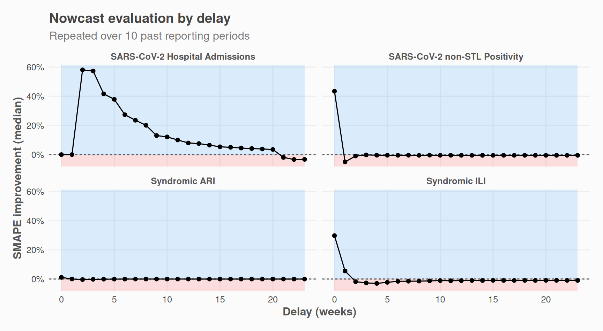
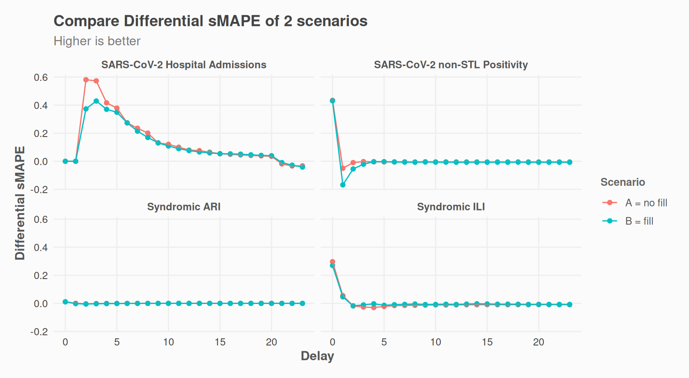

library(nowcastr)
nc_eval_obj <-
nowcast_demo %>%
nowcast_eval(
n_past = 10,
max_delay = 5,
max_reportunits = 8,
do_model_fitting = FALSE,
col_date_occurrence = date_occurrence,
col_date_reporting = date_report,
col_value = value,
group_cols = "group",
time_units = "weeks"
)To evaluate model accuracy, nowcast_eval() performs historical backtesting. It iteratively applies nowcast_cl() to past dates, censoring data that would have been unavailable at each point in time. By comparing these predicted values against the observed values (the raw data available at the time), we can quantify the model’s added value.
We use two indicators:
Win Rate: The frequency with which the model’s absolute error is lower than the observation’s absolute error. A value >50% suggests the nowcast is more reliable than the raw data.
-
Differential sMAPE ():
This measures the average reduction in symmetric error. A positive value indicates the model improves accuracy over the initial report, while a negative value suggests the raw data was already more accurate.
Run evaluation
You can run the evaluation with all the same parameters as nowcast_cl().nowcast_eval() has only one additional parameter: n_past, which controls how many steps in the past you wish to run a nowcast on.
This will return an S7 object with 2 slots for 2 datasets.
-
nc_eval_obj@detailcontains detailed results, and
-
nc_eval_obj@summaryis summarised bygroup_colsanddelay.
nc_eval_obj@detail
#> # A tibble: 238 × 12
#> group cut_date date_occurrence last_r_date value value_predicted value_true
#> <chr> <date> <date> <date> <dbl> <dbl> <dbl>
#> 1 SARS… 2025-09-08 2025-08-04 2025-09-08 47 87.4 143
#> 2 SARS… 2025-09-08 2025-08-11 2025-09-08 19 50.1 112
#> 3 SARS… 2025-09-15 2025-08-11 2025-09-15 18 31.7 112
#> 4 SARS… 2025-09-08 2025-08-18 2025-09-08 10 46.5 123
#> 5 SARS… 2025-09-15 2025-08-18 2025-09-15 11 26.4 123
#> 6 SARS… 2025-09-22 2025-08-18 2025-09-22 40 84.2 123
#> 7 SARS… 2025-09-08 2025-08-25 2025-09-08 5 58.6 107
#> 8 SARS… 2025-09-15 2025-08-25 2025-09-15 6 23.4 107
#> 9 SARS… 2025-09-22 2025-08-25 2025-09-22 30 98.2 107
#> 10 SARS… 2025-09-29 2025-08-25 2025-09-29 40 98.5 107
#> # ℹ 228 more rows
#> # ℹ 5 more variables: delay <dbl>, SAPE_pred <dbl>, SAPE_obs <dbl>,
#> # SAPE_improvement <dbl>, isWin <int>
nc_eval_obj@summary
#> # A tibble: 24 × 10
#> group delay n_periods n_obs smape_diff_med smape_diff_q1 smape_diff_q3
#> <chr> <dbl> <int> <int> <dbl> <dbl> <dbl>
#> 1 SARS-CoV-2 … 0 10 10 0 0 0
#> 2 SARS-CoV-2 … 1 10 10 0 0 0.375
#> 3 SARS-CoV-2 … 2 10 10 0.619 0.417 0.671
#> 4 SARS-CoV-2 … 3 10 10 0.507 0.289 0.636
#> 5 SARS-CoV-2 … 4 10 10 0.410 0.222 0.493
#> 6 SARS-CoV-2 … 5 10 10 0.368 0.190 0.422
#> 7 SARS-CoV-2 … 0 8 8 0.431 0.420 0.436
#> 8 SARS-CoV-2 … 1 10 10 -0.0782 -0.100 -0.0399
#> 9 SARS-CoV-2 … 2 10 10 -0.00756 -0.0177 0.00859
#> 10 SARS-CoV-2 … 3 10 10 -0.00603 -0.00745 0.000239
#> # ℹ 14 more rows
#> # ℹ 3 more variables: winrate <dbl>, winrate_low <dbl>, winrate_high <dbl>Plots
Plot aggregated indicators
plot_nowcast_eval(nc_eval_obj, delay = 0)
Plot one indicator by delay
# library(ggplot2)
plot_nowcast_eval_by_delay(nc_eval_obj, indicator = "smape_diff_med") +
ggplot2::facet_wrap(. ~ group, scales = "free_y")
Plot raw values, for one delay
- predicted values
- observed values (i.e. reported at the time)
- last reported values (ground truth)
plot_nowcast_eval_detail(nc_eval_obj, delay = 0)
Examples: Evaluate Scenarios
Example 1: Vary fill_future_reported_values
We can test if accuracy of nowcasts improve with or without fill_future_reported_values():
nc_eval_obj_with_fill <-
nowcast_demo %>%
fill_future_reported_values(
col_date_occurrence = date_occurrence,
col_date_reporting = date_report,
col_value = value,
group_cols = "group",
max_delay = "auto"
) %>%
nowcast_eval(
n_past = 10,
max_delay = 5,
max_reportunits = 8,
do_model_fitting = FALSE,
col_date_occurrence = date_occurrence,
col_date_reporting = date_report,
col_value = value,
group_cols = "group",
time_units = "weeks"
)
library(dplyr)
indicator <- "smape_diff_med"
scenario_a <- nc_eval_obj@summary %>%
dplyr::select("group", "delay", "smape_diff_med") %>%
dplyr::mutate(scenario = "No fill")
scenario_b <- nc_eval_obj_with_fill@summary %>%
dplyr::select("group", "delay", "smape_diff_med") %>%
dplyr::mutate(scenario = "Fill")
## quick mean of everything
dplyr::bind_rows(scenario_a, scenario_b) %>%
dplyr::filter(delay <= 3) %>% ## predictions for older data are not that interesting
dplyr::summarise(
.by = c(scenario),
avg_smape_diff_med = mean(smape_diff_med, na.rm = T)
) %>%
dplyr::mutate(tag = dplyr::if_else(avg_smape_diff_med == max(avg_smape_diff_med), "best overall", "")) %>%
print()
#> # A tibble: 2 × 3
#> scenario avg_smape_diff_med tag
#> <chr> <dbl> <chr>
#> 1 No fill 0.116 "best overall"
#> 2 Fill 0.0835 ""
## Comparison plot
library(ggplot2)
dplyr::bind_rows(scenario_a, scenario_b) %>%
dplyr::summarise(
.by = c(delay, scenario, group),
smape_diff_med = mean(smape_diff_med, na.rm = T)
) %>%
ggplot(aes(x = delay, y = smape_diff_med, color = scenario)) +
geom_point() +
geom_line() +
facet_wrap(~group, scales = "free_y") +
# ggplot2::scale_y_continuous(labels = scales::label_percent()) +
theme_nowcastr() +
labs(
y = "Differential sMAPE",
x = "Delay",
color = "Scenario",
title = "Compare Differential sMAPE of 2 scenarios",
subtitle = "Higher is better"
)
Example 2: Vary max_reportunits
# devtools::load_all("~/gh/nowcastr")
library(dplyr)
{
results <- tibble()
results_details <- tibble()
for (ii in seq(2, 15, 1)) {
nc_eval_obj_i <-
nowcast_demo %>%
filter(group == "Syndromic ILI") %>%
nowcast_eval(
n_past = 99,
max_delay = 3,
max_reportunits = ii, ## this varies
do_model_fitting = FALSE,
col_date_occurrence = date_occurrence,
col_date_reporting = date_report,
col_value = value,
group_cols = "group",
time_units = "weeks"
)
res_i <- nc_eval_obj_i@summary %>% mutate(max_reportunits = ii)
res_d_i <- nc_eval_obj_i@detail %>% mutate(max_reportunits = ii)
results <- bind_rows(results, res_i)
results_details <- bind_rows(results_details, res_d_i)
# avg <- mean(res_i$smape_diff_med) |> signif(2)
# message(max_reportunits, ": ", avg)
}
}
library(ggplot2)
results %>%
filter(group == "Syndromic ILI") %>%
filter(delay < 3) %>%
summarise(
.by = c(group, max_reportunits, delay),
avg_smape_diff_med = mean(smape_diff_med, na.rm = T)
) %>%
mutate(
.by = c(group, delay),
best = if_else(avg_smape_diff_med == max(avg_smape_diff_med), "best", "")
) %>%
mutate(delay = factor(delay)) %>%
ggplot(aes(x = max_reportunits, y = avg_smape_diff_med, color = delay, group = delay)) +
geom_line() +
geom_point() +
theme_nowcastr() +
# geom_text(aes(label = best)) +
# geom_point(color='red') +
# geom_point(aes(fill = best == 'best')) +
geom_point(shape = 21, aes(fill = best == "best")) +
scale_fill_manual(values = c("FALSE" = "transparent", "TRUE" = "red"), guide = "none") +
scale_color_viridis_d(option = "mako", begin = .4, end = .8) +
# ggplot2::scale_y_continuous(labels = scales::label_percent()) +
# facet_wrap(. ~ delay, scales = "free_y") +
facet_wrap(. ~ group, scales = "free_y") +
labs(y = "Differential sMAPE", x = "max_reportunits", color = "Delay")
results %>%
filter(group == "Syndromic ILI") %>%
filter(delay < 3) %>%
summarise(
.by = c(max_reportunits),
n = n(),
avg_smape_diff_med = mean(smape_diff_med, na.rm = T)
) %>%
mutate(tag = if_else(avg_smape_diff_med == max(avg_smape_diff_med), "best overall", "")) %>%
print()
#> # A tibble: 14 × 4
#> max_reportunits n avg_smape_diff_med tag
#> <dbl> <int> <dbl> <chr>
#> 1 2 3 0.0865 ""
#> 2 3 3 0.112 ""
#> 3 4 3 0.127 ""
#> 4 5 3 0.141 ""
#> 5 6 3 0.140 ""
#> 6 7 3 0.146 "best overall"
#> 7 8 3 0.142 ""
#> 8 9 3 0.137 ""
#> 9 10 3 0.138 ""
#> 10 11 3 0.140 ""
#> 11 12 3 0.140 ""
#> 12 13 3 0.140 ""
#> 13 14 3 0.142 ""
#> 14 15 3 0.143 ""